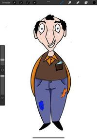

Команда дизайнеров “Басманных хроник: Путешествие через вселенные” рада поделиться важной новостью: наши художники завершили работу над артом первой локации, научным центром, и образом главного героя - Анатолия Синицина!
Научный центр Синицина - это ключевое место в игре, где разворачивается основное действие. Он отражает суть увлечений и амбиций Анатолия, а также служит отправной точкой для его невероятного путешествия.
Анатолий Синицин - это ученый, который мечтает о создании машины времени и перемещении в альтернативные реальности. Его образ сочетает в себе гениальность, увлеченность и некоторую неординарность.
Посмотрите на новые арты, изображающие научный центр и Анатолия Синицина.
